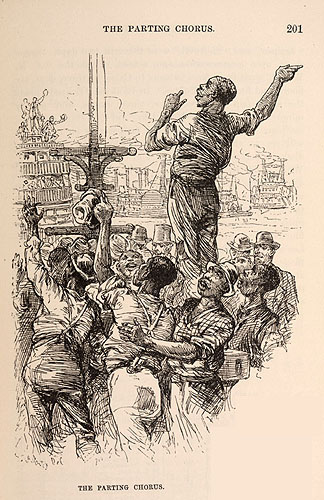

|
 It is not until July, when the seventh and last installment of "Old Times" appeared, that Atlantic readers found out directly from the narrator that the "entire crew" of a steamer, "firemen and deck-hands," were "(usually swarthy negroes)." As part of MT's stirring account of an old-time steamboat race leaving from the levee in New Orleans, he describes "the half-naked crews of perspiring negroes" loading "freight into the hold," and the "mighty chorus" of black voices that cheers the start of the race. This race is the only kind of race that matters in MT's first text about the ante bellum South. The Barrett Collection, UVA PS1314_A1_1883c |